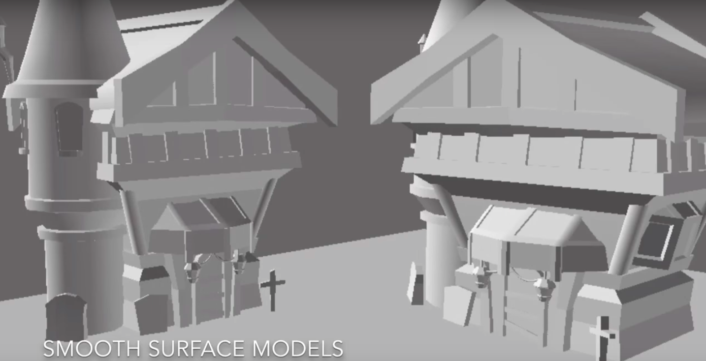
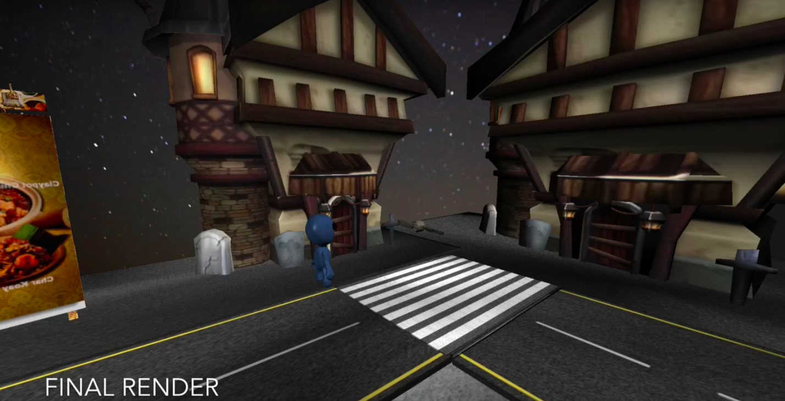

The composition technique
The theory of composition tracking technique using Iyan3D pro without using Blender motion tracking. The only cons is that it does not have a calculation of motion tracking on Iyan3D pro.
Behind the scenes with Iyan3D
 Tools
Let me see what you got!